Every screen, every command, every flag
This page is the whole surface in one place: the nine screens of the web interface, the three destination surfaces that live inside one of them, and the terminal docked under them all; the twenty commands of the rbm command line; and every subcommand and flag of the installer. The first-run tutorial walks the one path a new install takes; this one does not walk anything, it enumerates.
- The web interface
- Dashboard
- Backup sets
- Backups
- Activity
- Quarantine
- Settings
- Storage destinations
- Adding a destination
- Configuring a destination
- Catalog recovery
- The docked terminal
- The command line
- Every command
- Where a change is written
- Exit codes
- install_docker_host.py
- Its six subcommands
- Every flag
- Its exit codes
The web interface
Six items in the sidebar, one screen behind each, two detail screens you reach by opening a row on the list above them, a catalog-recovery screen reached from the footer, and a terminal docked to the bottom of all of them. The top bar carries the service badge (running, and which version), a light/dark toggle and Sign out. The sidebar footer says which platform the deployment thinks it is on, which is the thing to check first when a NAS-specific feature is missing.
Three of the surfaces below have no route of their own: the storage destinations list and the two wizards that add and configure one all live inside Settings. They are enumerated separately anyway, because each is a screenful of controls that write configuration, and a reader looking one up should not have to find it inside a table row about a card.
Nearly everything on these screens is reachable from the command line as well, and several screens say so in place: a control that changes configuration prints the rbm command that does the same thing, right underneath itself. Where the command cannot carry a field the screen is about to save, the screen prints the command and names the fields it leaves out, rather than printing a line that quietly configures less than was asked for.
Dashboard
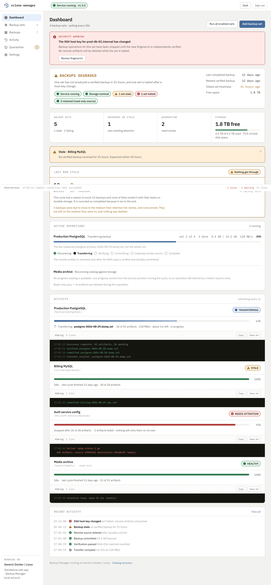
| Region | What it shows | What it is for |
|---|---|---|
| Security warning | a changed SSH host key, per set | The set is halted, not retried. Nothing on the remote is deleted while it is halted, and Review fingerprint is the only way past it, because accepting a new key silently is the failure this product refuses to have. |
| Health summary | a verdict, then pills | Degraded, and why: which sets are stale, which are halted, how long since the newest verified backup, and how much room is left. The pills are counts, not links. |
| Count cards | backup sets, degraded or stale, quarantine, storage | The four numbers worth waking up to. Quarantine here is the same count as the sidebar badge. |
| Active operations | what is running right now | Per operation: the stage it is in, out of Discovering, Transferring, Verifying, Committing, Cleaning remote source, Complete. The progress bar measures the current artifact, not the whole run, and it says so. |
| Activity | one panel per backup set | Live status, progress, and an expandable log per set, with Copy and Save .txt on each. A set with no live process reports no progress rather than a stale bar. |
| Recent activity | the newest durable events | The same feed Activity pages through in full. View all goes there. |
| Run all enabled sets | a button | Starts a cycle for every enabled set now, rather than at the next poll. |
| Add backup set | a button | Opens the six-step wizard the first-run tutorial walks through. |
Backup sets
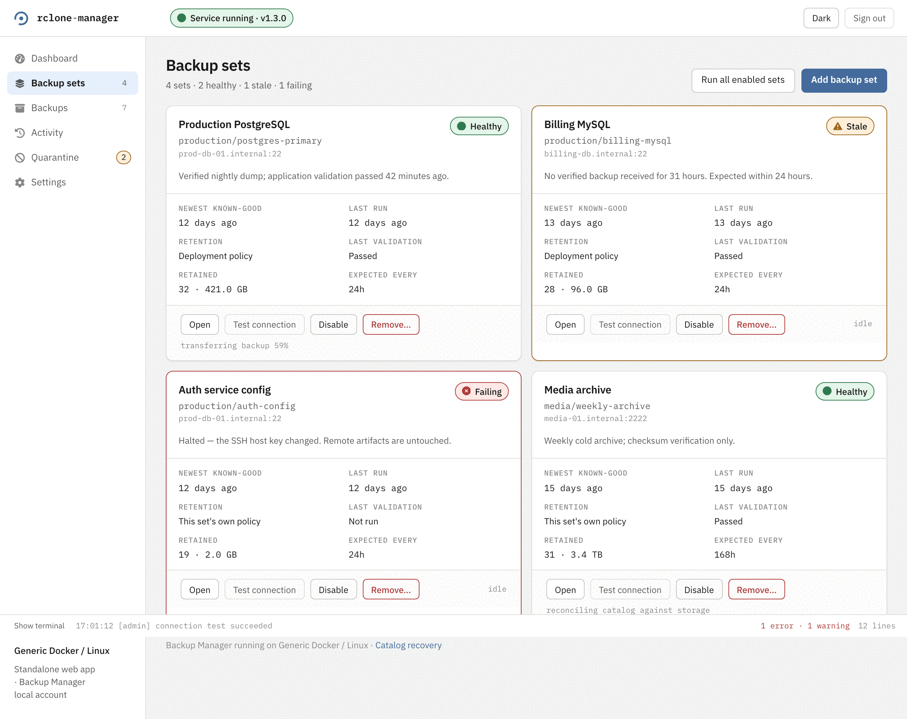
| On the card | Example | What it means |
|---|---|---|
| Health pill | Healthy / Stale / Failing | Stale is “no verified backup inside the expected interval”. Failing is an attempt that ended badly, including a halt. |
| Set id | production/postgres-primary | Source and set name. This is the id every command takes, and the first two thirds of an artifact id. |
| Newest known-good | 12 days ago | The last backup that verified. FR-19 protects this one from retention. |
| Retention | Deployment policy / This set’s own policy | Which chain governs it. A set with its own policy is not merged with the deployment's, it replaces it. |
| Retained | 32 · 421.0 GB | How many copies this set is keeping and what they cost. |
| Expected every | 24h | What makes it stale when it is exceeded. |
| Open | a button | Goes to the set's own screen: its artifacts, its retention card, its live activity. |
| Test connection | a button | Resolve, connect, check the host key, offer the key, authenticate, list the folder. Six named outcomes, and the same check rbm backup-set test-connection runs. |
| Disable | a button | Stops the scheduler running it. Keeps the configuration and every retained copy. |
| Remove… | a button | Configuration only. The backups it collected stay on storage and stay listed under Backups, and creating the set again with the same id takes them back. |
Backup set detail
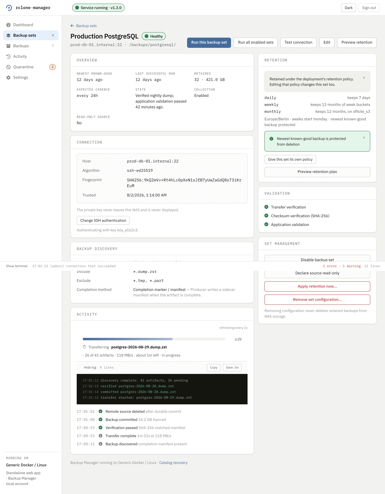
| Control | What it does | What it costs |
|---|---|---|
| Run this backup set | Runs one pass over this set only. | A real transfer cycle. Unavailable while the set is disabled, because a sweep would not have visited it either. |
| Run all enabled sets | The same deployment-wide run the Dashboard and Backup sets list offer. | A cycle over every enabled set, not only this one — the label says so because this button sits on one set's own page. |
| Test connection | Resolve, connect, check the host key, authenticate, list the folder. | Nothing is written. The six-step trace lands in the docked terminal, where a refusal is written too rather than silently swallowed. |
| Edit | Opens edit mode, one field at a time. | Nothing yet. Each field keeps its own Save, which writes that one field immediately rather than waiting for the rest of the form. |
| Save anyway / Leave it as it was | Answers a refusal a per-field save came back with (an unproven host key, a completion-method change mid-transfer). | Save anyway writes the same patch again over the refusal. Leave it as it was writes nothing and returns the field to what it was. |
| SAVE ALL & EXIT EDIT | Writes every field changed since Edit was pressed and returns to view mode. | One write per changed field. Anything not touched this session is left alone. |
| CANCEL & EXIT EDIT MODE | Leaves edit mode without saving what is still typed. | Nothing written. The confirmation lists exactly what would be discarded; a field a per-field Save already wrote earlier in the same session is not undone, because that write already happened. |
| Preview retention | What the current policy would delete for this set, as a reviewed plan. | Nothing. It is a preview, the same dialog the Backups screen opens. |
Pressing Edit on a set with a backup in flight stops it first and says so on screen: the confirmation reads “Stop it to edit this backup set?”, and the interrupted backup stays incomplete rather than counting as a finished one. The next cycle after edit mode closes picks it up again.
Backups
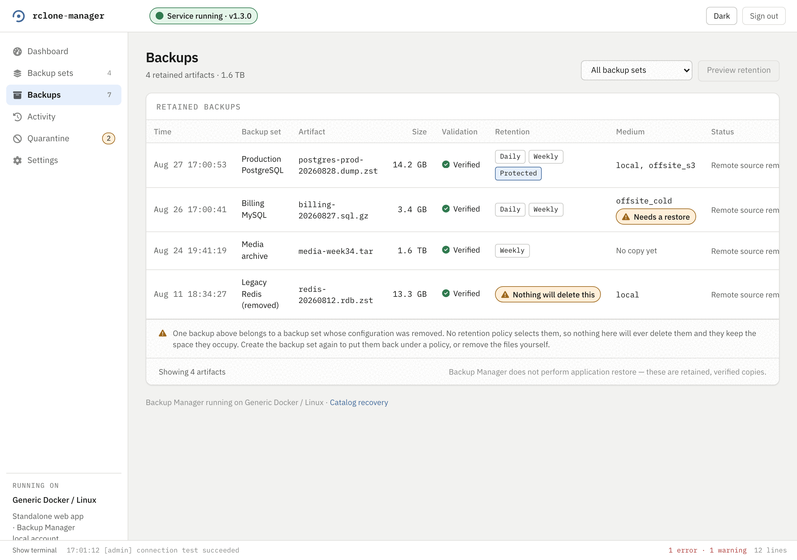
| Column | Example | What it means |
|---|---|---|
| Validation | Verified | The checksum matched and the validator, if the set names one, accepted it. An artifact that failed is not here, it is in Quarantine. |
| Retention | Daily, Weekly, Protected | Which tiers keep this copy. Protected is FR-19's newest known-good, which no tier may delete. |
| Nothing will delete this | a warning chip | The set's configuration was removed, so no policy selects the copy. It occupies space for ever until the set is recreated or the file is removed by hand. |
| Medium | local, offsite_s3 | Where the copies are. No copy yet means the tier that should hold one has not moved it. |
| Needs a restore | a warning chip | The copy is in an archival storage class and cannot be read until the provider is asked to make it readable. That is rbm restore, it is billed, and it takes hours. |
| Preview retention | a button | What the current policy would delete, as a reviewed plan, before anything is deleted. |
Each row opens that artifact's own detail page.
There is no restore here and there is no download. The footer of the table says so: these are retained, verified copies, and recovering a backup into an application is a documented manual procedure this product deliberately does not carry out.
Backup detail
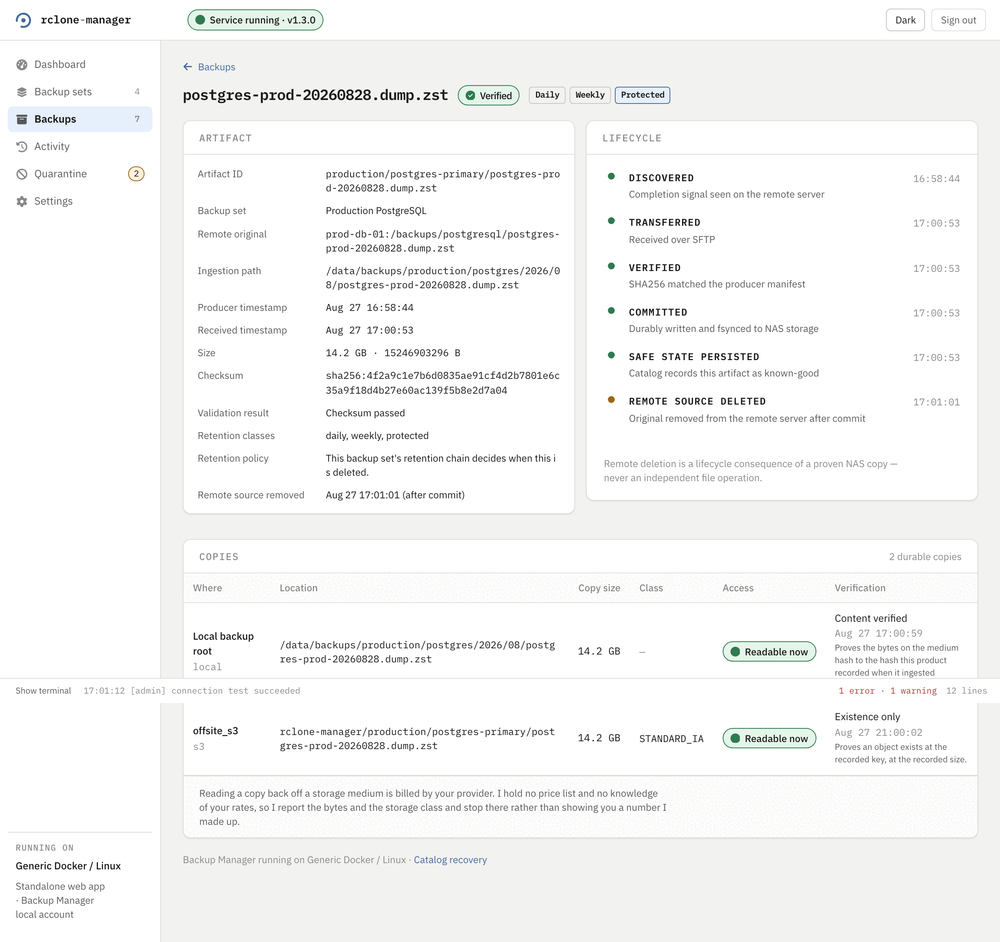
Two cards and a list, and no button among them. Artifact is the recorded facts: id, remote original path, the ingestion path (a path on disk, not proof a readable file is sitting there), producer and received timestamps, size, checksum, and which retention classes selected it. Lifecycle is the same timeline the dashboard's live view feeds, at rest: discovered, transferred, verified, committed, remote source removed. Below both, the copies list names where the bytes actually are, one row per storage medium, each with its own verification class and whether reading it back needs a restore first.
This screen answers “is this backup safe, and where is it”, and every one of those answers is something the engine already decided. Restoring a backup into an application is a documented manual procedure this product deliberately does not carry out, so there is no download and no restore button to be missing.
Activity
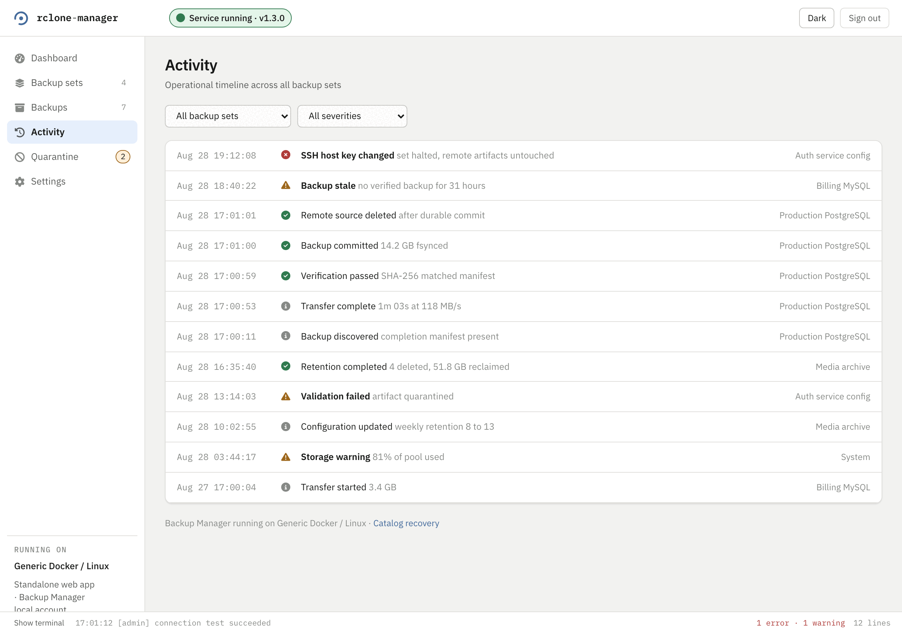
Each row is one recorded lifecycle transition: discovered, transferred, verified, committed, remote deleted, retention completed, host key changed, storage warning, configuration updated. The severity icon is the thing to scan: an error is a halt or a failure, a warning is a state that will become one, and information is the pipeline doing its job.
This is the same feed rbm activity prints, and it is durable: it survives a restart, which is what separates it from the docked terminal below.
Quarantine
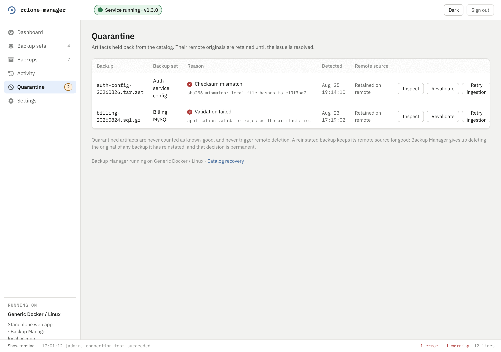
| Control | What it does | What it costs |
|---|---|---|
| Inspect | The full recorded reason, including the hashes that disagreed. | Nothing. It reads. |
| Revalidate | Re-runs the checks against the copy that is already here. | Nothing moves. If it passes, the artifact leaves quarantine. |
| Retry ingestion | Puts the artifact back into the pipeline at DISCOVERED, so it is fetched again. | A re-transfer. |
| Reinstate | Trust the copy as it is. | Permanent: the remote original is never deleted for that artifact afterwards, and that decision cannot be taken back. |
Settings
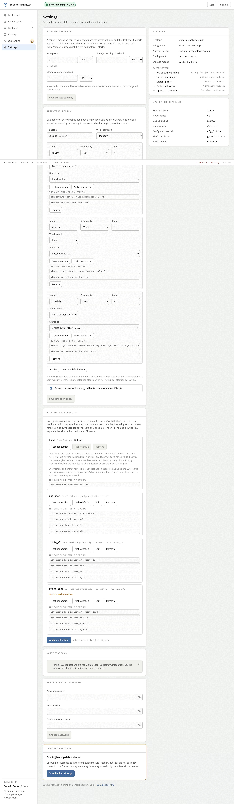
config.yaml outside the wizard.| Card | What it sets | What to know |
|---|---|---|
| Storage capacity | A cap, a warning threshold and a critical threshold | A cap of 0 means no cap, and the dashboard reports against the disk instead. Any other value is enforced: a transfer that would push past it is refused before it starts, rather than half way through. |
| Retention policy | The timezone, the week start, and the tier chain | Each tier is a name, a granularity, how many to keep, an optional window unit, and the destination its copies go to. Removing every tier is not how retention is switched off: an empty chain reinstates the default daily/weekly/monthly one. |
| Protect the newest known-good | A checkbox | FR-19. With it on, no tier may delete the newest verified backup of a set. |
| Storage destinations | Where copies can go | Every destination is an instance of a registered backend, so there can be more than one of any of them — two local volumes and two buckets is an ordinary list. It has a section of its own below, because five of its controls change configuration and each one costs something different. |
| Notifications | Where alerts go | Native NAS notifications where the platform has them, webhooks where it does not. The card says which of the two this deployment got. |
| Administrator password | The local account's password | Current, new, confirm. This account is not the NAS login and never was. |
| Catalog recovery | A link to the screen below | It appears here because it is the only destructive-sounding thing that is not destructive. |
| Platform | What the deployment thinks it is | The integration, the authentication source, the deployment shape, and which capabilities the platform grants. Check here first when a NAS feature is missing. |
| System information | Versions | Service version, API contract, backup engine, Go toolchain, configuration revision, platform adapter, build commit. |
Under every retention tier and every destination, this screen prints the rbm command that does what the control above it does: rbm settings patch --tier-medium monthly=offsite_s3, rbm medium test-connection offsite_s3, rbm medium remove offsite_s3. They are there to be copied, and they are the reason the two surfaces cannot drift: the button and the command are the same call.
Storage destinations
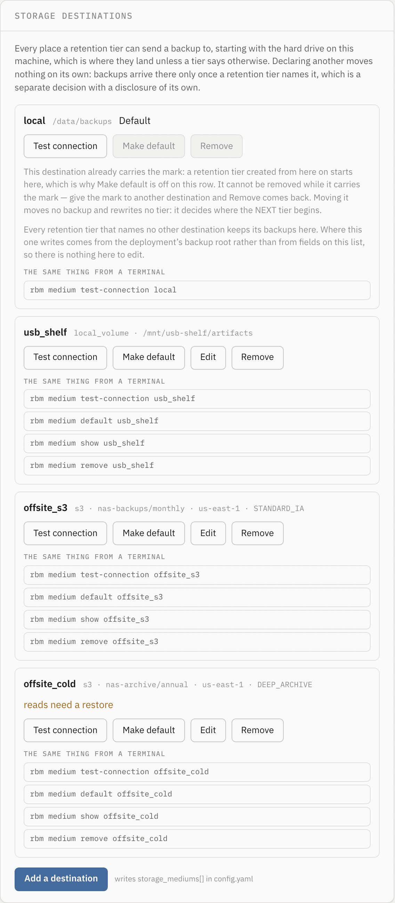
A backend is described by a manifest the build carries — data, not code — and the manifest is what decides which fields a destination has, and which steps its connection test runs. Two are registered: local_volume, a directory on a disk this machine can see, and s3, a bucket on Amazon's service or anything that speaks its API. The drive backups already land on is an instance too, called local, and the only thing still special about it is that its location comes from the deployment's backup root rather than from a field, so it has no Edit.
Declaring a destination moves nothing. Backups arrive somewhere only once a retention tier names it, which is the card above this one and a separate decision with its own disclosure.
| Control | What it does | What it costs |
|---|---|---|
| Test connection | Runs the probe this destination's manifest declares, one step at a time, and reports every step. | A real object written to the destination, read back, and deleted. Reachable is not the same as writable, which is why it is not a ping. Nothing is saved by checking; a destination that refuses is left exactly as unproven as it already was. A pass against a destination carrying never proven clears that mark, and it is the only thing that does. |
| Make default | Hands the Default mark to this destination. | Two things, from one click, and the confirmation says both: this destination becomes the one a newly created tier starts on and stops being removable; the destination that held the mark becomes removable. Nothing already written moves — no tier is rewritten and no copy is relocated — so the second half is the half nobody clicked for, and it is the one that makes a destination deletable. |
| Edit | Opens the editor for a declared destination's fields. | Nothing until it saves, and it will not save what it has not proven. Absent, not dimmed, on local: there is no state an operator can reach that would give that destination fields to edit. |
| Remove | Deletes the declaration. | Configuration only: not one stored copy is deleted. It is refused while any copy names this destination, and the refusal names how many and which backup sets, because removing the declaration would leave the deployment with no endpoint and no credential to reach those copies with — they would read as unreachable and no retention pass could ever run against them again. |
| Add a destination | Opens the three-step wizard below. | Nothing. The wizard writes storage_mediums[] in config.yaml eventually, and says so beside the button, but not from any of its own three steps. |
Three chips appear beside a destination's name, and each is a claim about a different thing. Default is where a newly created tier starts. reads need a restore is an archival storage class: a copy here cannot be read until the provider is asked to thaw it, which is billed and takes hours. never proven is a destination declared with the check skipped — --no-verify on the command line — so nothing has yet shown that its credential is accepted or that an object written there can be read back.
The destination holding the Default mark keeps both Make default and Remove, disabled, each with the sentence saying why and what lifts it. That pairing is deliberate: the destination an operator cannot remove is the one whose row would otherwise offer neither the removal nor the way to earn it, and the control that earns it sits on every other row. A destination marked never proven has Make default off for a second reason — every tier that follows the default would start somewhere nobody has checked — and a refusal is worth more before the click than after it.
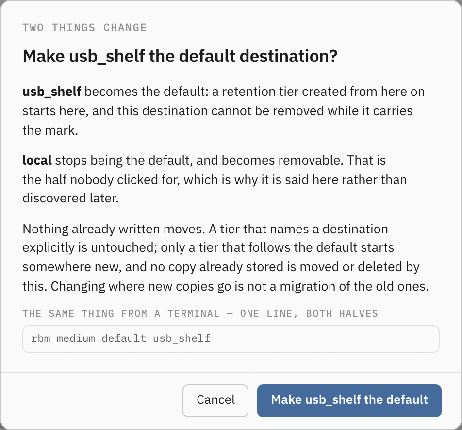
Adding a destination
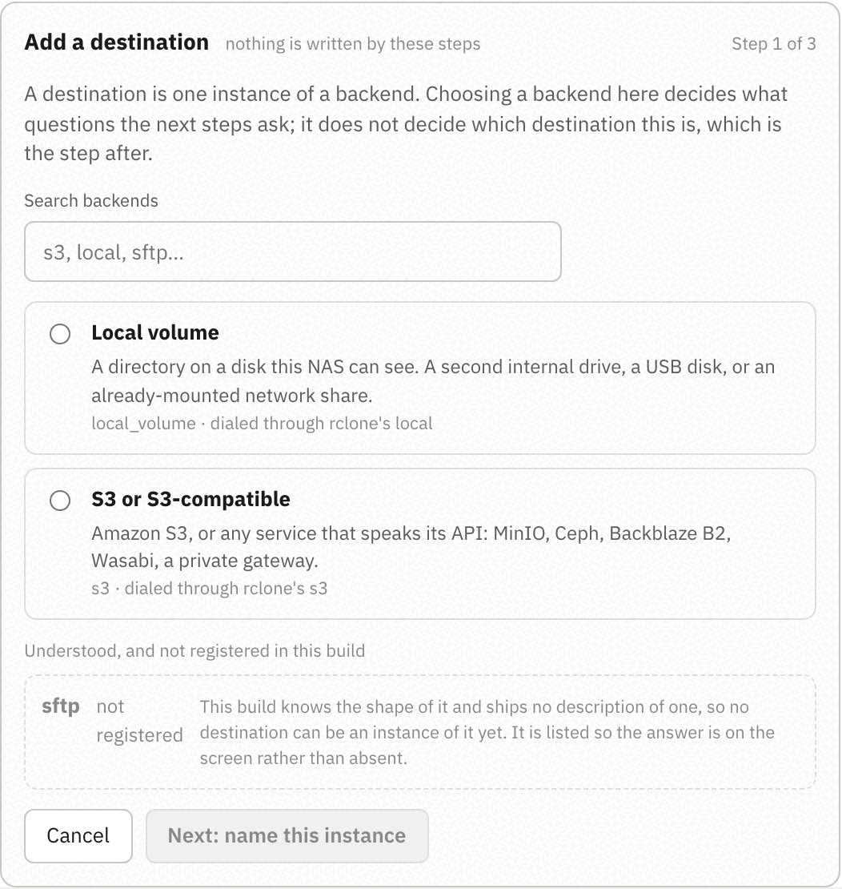
GET /api/v1/backends; there is no list of backend names in the page.Choosing and naming are two steps rather than one, and that will look like ceremony in a release that registers two backends. It is the shape the rest of this holds up: several instances of one backend is the normal case, and a single screen that collapses “pick S3” and “call it cold_archive” into one act has quietly said again that a destination is a backend type.
| Step | What it asks | What it costs |
|---|---|---|
| 1. Choose a backend | Which registered backend this destination is an instance of, searchable by id, label, summary or rclone backend. | Nothing. Backends this build understands and no manifest describes are drawn and cannot be chosen: they carry no radio and say so in place. Listing them is a real answer to somebody who came looking for SFTP, which a menu that never mentions it is not. |
| 2. Name this instance | What this destination is called. The step lists the instances of the chosen backend that already exist. | Nothing, and the name is the one thing here that cannot be changed later: a retention tier refers to a destination by it, and every stored copy records it as where it lives. The pattern and the reserved id come from the same response as the backend list, so this form refuses exactly what a hand-edited configuration file would be refused for. |
| 3. Confirm | Nothing. It states the backend, the name, that no values have been asked for yet, and which fields the next step will ask for. | Nothing, and it says so: Next: configure it hands off to the configure wizard and writes no configuration on the way. |
None of these three steps writes anything, and the confirm step says as much. The destination is written once, by the configure step that follows, and only after a connection test against it has passed. That is not a shortcut: a destination carrying no values is refused by the configuration schema itself, so a half-created one is not representable in config.yaml at all — and the consequence an operator can use is that no retention tier can ever be pointed at a destination nobody has proved.
Configuring a destination
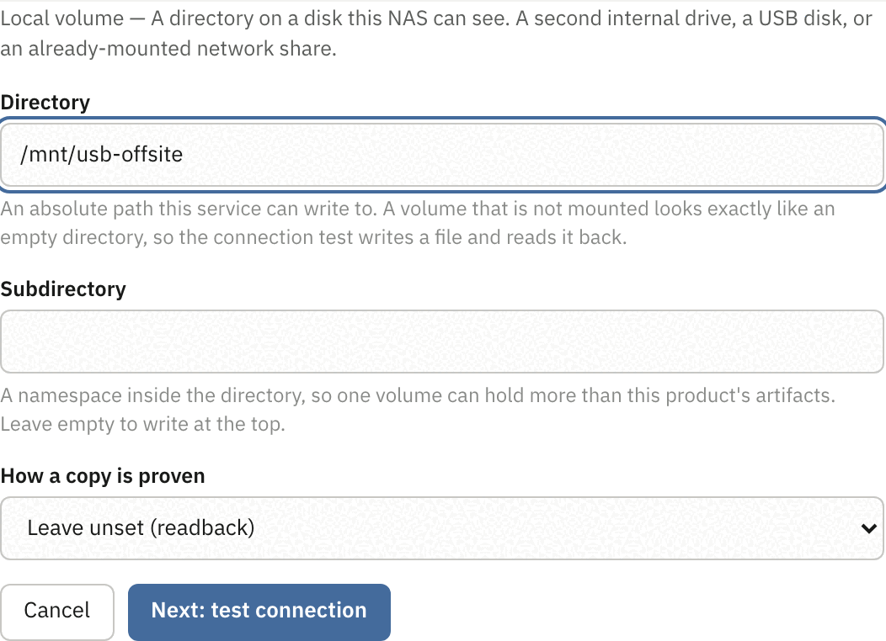
Three steps: fill in what the manifest declares, prove it, then look at what is about to be written. The order is the point — what gets written is what was proven — and it is enforced rather than advised: editing any field makes an earlier pass stale, the screen says so where the edit was made, and Save configuration is out of reach until a check against the values now on screen has passed.
| Field kind | What it renders | What to know |
|---|---|---|
string | A text box. | A manifest may pin a pattern to it, and the refusal names the field rather than quoting what was typed. |
path | A text box for an absolute path on this machine. | A volume that is not mounted looks exactly like an empty directory, which is why the connection test writes a file and reads it back rather than checking the directory is there. |
url | A text box for an endpoint. | Deliberately not the browser's own URL field: that accepts any scheme, and a field the browser waves through and the manifest refuses is two definitions of a legal endpoint with the one nobody wrote deciding. |
enum | A dropdown of the declared choices. | An optional one opens on Leave unset and names what unset will be read as. It stays unset: choosing the default on the operator's behalf would freeze a value this product resolves at read time into their configuration file. |
bool | A checkbox. | — |
key_prefix | A text box for a namespace inside the bucket or directory. | So one bucket or one volume can hold more than this product's artifacts. Empty writes at the top. |
credential | An access key id, readable, and a secret in a masked field. | Typed once, exchanged immediately for an opaque reference, and dropped from the page before anything else is sent. It is never read back: nothing reports a destination's credential, not even which kind it is, so the field is empty when an operator returns to a destination that has one — and the review step says stored, and never shown again rather than showing anything. Changing a region does not mean re-entering a key; leaving the pair empty keeps the credential already stored. |
![The configure wizard's test step: a paragraph saying a real object is written and read back and removed and that reachable is not the same as writable, a round trip figure of 0.7s, then nine rows. credentials skipped with the manifest's reason that a local destination reads no credential, reach passed naming the directory, deliverable passed, write passed, read_back passed, storage_class skipped with the manifest's reason that a filesystem has no storage classes, verification passed, delete passed, and space passed reporting 1.4 TB available. Below them the equivalent rbm medium test-connection command and Back, Test connection again and Next: review](screens/ref-14-probe-steps.png)
Eight steps are a closed vocabulary the engine and the manifests share, and a manifest declares for each one whether this backend runs it and, when it does not, the sentence saying why. So the skipped rows and their reasons are on screen from the start: an operator learns that a local volume reads no credential rather than wondering why nothing checked their key. The drive on this machine and a declared local volume both add a ninth answer, space, which is the one failure a bucket cannot have.
| Step | What it proves |
|---|---|
credentials | The credential this destination declares can be obtained at all, which is a question about this host. Skipped for a local volume, which reads none. |
reach | The endpoint answers and holds the bucket with that credential — or, for a local volume, that the directory is there and is a directory. |
deliverable | An artifact can be delivered to this destination's storage class at all. An archive class cannot take delivery, and is refused before anything is written, because a probe object there is billed for a minimum measured in months. |
space | The filesystem has room, measured against this deployment's own safety margin. Local destinations only: a bucket has no filesystem to fill. |
write, read_back, delete | A real object written, read back byte for byte, and removed again. Read access is not what a move needs, a write nobody can read is not a backup, and a destination this manager can write to and not delete from is one no retention pass could ever clean up. |
storage_class | The object landed in the class the configuration asked for, rather than one the provider substituted. Skipped for a local volume, which has no classes. |
verification | The way this destination claims a copy is proven can actually be achieved here. Declaring a digest the endpoint cannot produce is a class that can never be met, so every move would refuse after the upload rather than fall back to a weaker check. |
A step after a failing one is not tried, and the list says that rather than drawing it as a pass or leaving it blank. Every sentence beside a row is the engine's own; none of them carries the text of what actually came back, because that names a path on the host or the name of an environment variable, and the classified cause goes to this manager's log instead.
The review step is the last of the three: what is about to be written, whether it was proven, and a checkbox offering to make this the destination new tiers start on. The offer is never taken as a side effect of saving — it is a second call, after the save — and the consequence is written beside it, naming the destination that stops being the default and therefore becomes removable. It is not offered at all to a destination that already holds the mark.
Catalog recovery
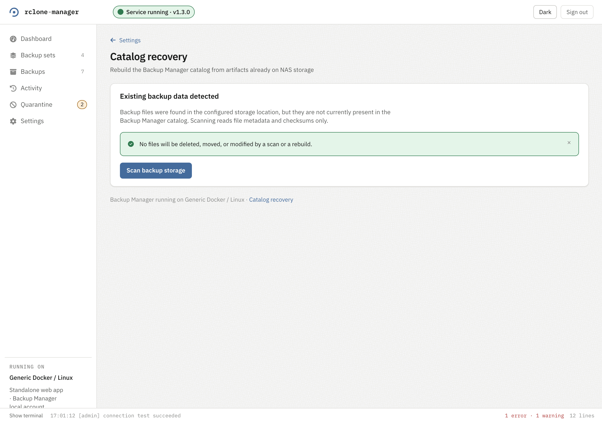
Every backup this manager commits gets a sidecar recovery manifest written beside it, and this screen is what those are for. Scan backup storage reads file metadata and checksums, reports how many artifacts it found and how many need review, and writes nothing. Artifacts it cannot make sense of go to Quarantine, not to a delete. The command line spells it rbm catalog rebuild, and --dry-run is the same read-only pass.
The docked terminal
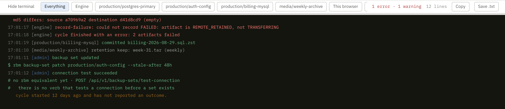
Two feeds in one panel, and the chips choose between them. Engine and the per-set chips are the serving process's own live output. This browser is what you have done in this tab, including the rbm command each action was equivalent to: the $ rbm backup-set patch production/auth-config --stale-after 48h line in the picture is the echo of somebody editing a set in the interface a moment earlier.
It is live, not durable. It starts again when the serving process restarts, and it says so when that happens. For history that survives, read Activity. Copy and Save .txt take what is on screen, filter and all.
The command line
The engine and the command line are two binaries in one image. rbm-web serves the API and the interface; rbm is what an operator types. Almost everything the interface does is here, and several things it does not: retention previews with per-run overrides, artifact-level validation with a full re-download, catalog rebuilds, and the storage-destination verbs. The exception runs the other way and is named under medium below: a destination on a local volume can be declared from the browser and not from here.
On the standard deployment it is reached through the engine container:
docker compose exec rclone-manager /rbm statusOn a CLI-only install the installer writes a wrapper and you type ~/rclone-manager/bin/rbm status instead. Every command except version takes --config, which defaults to /etc/backup-manager/config/config.yaml and also accepts the directory, because that is what packaging mounts.
Every command
Twenty of them. This table is checked against the binary's own dispatch table on every run of the repository's gate, so a command that is added, removed or renamed and not reflected here fails the build rather than going quietly stale.
| Command | What it does |
|---|---|
run | Perform one processing cycle and exit. |
daemon | Repeat the cycle at poll_interval. One engine per deployment: it is refused rather than started if another process is already serving that state database. |
check | Validate the configuration and the state database, then exit. |
status | Report process and backup-set health, exiting non-zero unless every set is healthy. |
sources | List the configured sources and their backup sets. |
backup-set | The configuration verbs for one set: create, patch, remove, test-connection, retention, edit-hold. A create or patch proves the connection before it writes anything, and --no-verify writes it anyway and leaves the set marked unverified until a test passes. |
artifacts | List journal artifacts, filtered by source and set, or print one artifact's full detail including the reason recorded for a failure. |
activity | List recorded lifecycle events, newest first. --follow streams the live feed instead, which is a different feed rather than a mode of the same one, so it needs a route to the serving process and refuses without one. |
fetch | Run one backup set's cycle on demand. |
retention | Preview retention decisions for the deployment or for one set, with per-run policy overrides that apply to the preview only. retention apply is the one that deletes, against a plan it prints first, and it requires --acknowledge. |
reconcile | Reconcile the journal against what is actually on disk, for every backup set. |
validate | Re-check one artifact's durable copy wherever it is. --content downloads a copy from a storage medium and re-hashes it, which costs egress, so it is asked for rather than assumed. |
catalog | catalog rebuild reconstructs a lost or corrupted state database from the sidecar recovery manifests. |
quarantine | Act on one quarantined artifact: revalidate re-checks it, retry re-enters it at DISCOVERED, reinstate trusts it in place and permanently forfeits deleting its remote original. |
retry | Put one FAILED artifact back into the pipeline. Failed is not quarantined, so it is its own verb, and nothing does it automatically. |
unconfigured | List the backup sets the journal remembers and the configuration no longer names, and what they still occupy. unconfigured clear ends those rows and removes the .partial residue a removal stranded, never a retained backup. |
medium | The storage-destination verbs: list, show, add, edit, remove, default, test-connection (also spelled preflight) and import-credentials. Credentials are taken on standard input and never as a flag. Its field flags are the ones a bucket has: --type takes s3, and there is no --path, so an instance of the local_volume backend cannot be declared here — the configure wizard is the only surface that can, and it prints its equivalent command with the missing fields named rather than a line that would write something else. |
restore | Ask the storage provider to make one archived copy readable again. It is billed and takes hours, so --acknowledge is required; --days defaults to 7 and is bounded to 30. |
settings | Report the live retention and capacity settings, or change one in place with settings patch, including pointing a single retention tier at a destination. |
version | Report the binary, Go and embedded rclone versions. |
restore above asks a storage provider to thaw an archived object so it can be read. It does not restore a backup into an application. Recovering data is a documented manual procedure and this product deliberately does not carry it out.
Where a change is written, and how you know
A configuration write goes one of three ways, and every command that makes one says which on a mode: line.
| Situation | What happens | Why |
|---|---|---|
| Nothing serving | Written here, and an engine started afterwards reads it. | There is nothing to disagree with. |
| Something serving, and a route to it | Handed to that process over its API, so it takes effect at once with nothing to restart. | The serving process holds the configuration in memory. |
| Something serving, no route | Refused, and nothing is written. | There is no config watcher and no SIGHUP reload in this build, so a change left in the file is one that process would never read. |
The route is three environment variables, never flags, because a password on a command line is in every process listing on the host: BACKUP_MANAGER_API_URL is the engine's address (its own listener from inside its container, or the published Web UI port from a shell on the host), and BACKUP_MANAGER_API_USERNAME and BACKUP_MANAGER_API_PASSWORD are the administrator credentials the interface takes. They are held for the one invocation and written nowhere.
Reads never refuse for want of a route. status, sources, artifacts and retention announce which world the answer is about instead: mode: engine-attached is a serving process holding the same configuration and asked the same question, mode: direct is nothing serving, and mode: unconfirmed is an answer read out of config.yaml that could not be checked against the serving process and can disagree with it.
Exit codes
| Code | Meaning |
|---|---|
0 | The command did what it was asked. |
1 | An ordinary failure: a configuration that will not load, a state database that will not open, a cycle that backed nothing up, a set or artifact that is not there, a status short of healthy, a route that was named and did not answer. |
2 | Nothing ran. The command line was wrong, or it asked for help rather than for work. A value that is not shaped like a backup set id is here too, refused before anything is opened. |
3 | Another process is serving this deployment, so nothing was done. Read the sentence beside it before retrying in a loop: a supervisor still rolling the outgoing process will let go, and an engine this host has no route to will not. |
install_docker_host.py
One file, no checkout, nothing outside the Python standard library. Copy it to the machine on its own and run it: it carries the canonical Compose definition inside itself, generated from container/compose.yaml and held to it byte for byte by a test, so there is nothing to clone on the host.
curl -fsSLO https://raw.githubusercontent.com/spdrman/rclone-manager/main/scripts/install/install_docker_host.py
python3 install_docker_host.py installEvery flag below has a default that works, which is what makes that second line the whole command. The install section on the home page is the short version of this.
Its six subcommands
| Subcommand | What it does | What it touches |
|---|---|---|
preflight | Runs every prerequisite check and exits. | Nothing. It is a dry run of install, and it declares the same flags so the run it rehearses is the run you get. |
install | Stages the deployment, brings it up, and proves it works, or refuses and says which prerequisite stopped it. | Creates directories, generates an SSH keypair if there is none, writes compose.yaml, compose.image.yaml and .env, and starts containers. |
status | Reports what is here and whether bridge networking still works. | Read-only. |
uninstall | Takes the stack down and removes the deployment files. | Never the backups, the state or the configuration. |
network-doctor | Diagnoses Docker bridge networking by measurement and repairs it. | Firewall rules, escalating through sudo, and with --fix-network persist a systemd unit and timer. |
network-undo | Removes every rule and unit network-doctor installed. | Only what carries this installer's own comment marker. |
Every flag
Grouped the way --help groups them, and the subcommands each one exists on are named beside it, because they are scoped: status and uninstall never read a credential path or an image reference and no longer declare those flags at all. This table is checked against the parser itself, so a flag that is added, removed or renamed and not reflected here fails the installer's own test suite.
| Flag | On | What it does, and what it defaults to |
|---|---|---|
| layout — the five flags every subcommand takes | ||
--prefix | all six | Where the deployment files and the default data directories live. Defaults to rclone-manager under the invoking user's home. |
--backup-dir | all six | Host directory completed artifacts land in. Defaults to <prefix>/backups. |
--state-dir | all six | Host directory for the SQLite lifecycle journal. Defaults to <prefix>/state. |
--config-dir | all six | Host directory holding config.yaml. Defaults to <prefix>/config, and may be empty: a fresh install serves a first-run flow rather than refusing to start. |
--project | all six | Compose project name. It decides which containers this installer considers its own. |
| credentials — never read, never printed | ||
--ssh-key | preflight, install | Host path to the SFTP client private key. Defaults to <prefix>/secrets/id_ed25519 and is generated there if absent; only the public half is ever printed. Naming a path explicitly that does not exist is a refusal, not a generate. |
--known-hosts | preflight, install | Host path to the pinned known_hosts. Defaults to <prefix>/secrets/known_hosts. For a source on a non-default SSH port the entry is keyed [host]:port. |
--source-port | preflight, install | The SSH port the SFTP source listens on, not a port on this host. No default and nothing infers one. Prefer supplying it in the environment: it is never printed, never written into .env, and never committed. |
| runtime | ||
--image | preflight, install | The image reference both services run. |
--release | preflight, install | Install a previously published release instead of this one. It fills the tag in --image and nothing else, and refuses rather than pick a winner when --image already names a different version. |
--image-archive | preflight, install | A docker save tarball to load instead of pulling, for a host that cannot reach the registry. |
--no-pull | preflight, install | Refuse rather than pull if the image is not already here. |
--compose-file | preflight, install | The canonical runtime definition to copy. Not a template: it is copied verbatim. Defaults to the copy embedded in this installer. |
--listen-port | preflight, install | Host port the Web UI is published on. The engine publishes nothing. Defaults to 8080. |
--public-base-url | preflight, install | The externally reachable base URL the one-time enrolment link is built from. Defaults to this machine's own LAN address and the listen port, because that link is opened from another machine; a host with no default route falls back to its hostname. |
--cli-only | preflight, install | Install the command line and nothing else: the engine runs rbm daemon instead of rbm-web serve, no web-ui container is started, no port is published, and an rbm wrapper is written to <prefix>/bin/rbm. A fresh CLI-only install starts nothing and prints the command that writes the first configuration. |
--no-cli-only | preflight, install | Convert a CLI-only deployment back to the full stack. |
--profile | preflight, install | Runtime profile, from the canonical definition's own declared list. Defaults to generic. |
--timezone | preflight, install | TZ for both containers. Retention's calendar boundaries depend on it. Defaults to this host's /etc/timezone, else UTC. |
--puid / --pgid | preflight, install | The uid and gid the containers run as. Default to this account's. |
--timeout | preflight, install | Seconds to wait for the engine's liveness probe and the Web UI. Defaults to 180. |
| existing install | ||
--mode | install | fresh refuses to run over an existing install. upgrade keeps every user, backup set and catalogued artifact, archiving them first, and converges when the version already matches. factory-reset discards the administrator record, the catalog and the configuration, archiving them first, and leaves the retained backups on disk. Left unset with an install already here, it asks on a terminal and refuses without one. |
--confirm-factory-reset | install | Confirms --mode factory-reset without a terminal. On a terminal the word is typed at the prompt instead, after the list of what is about to be destroyed. |
| bridge networking | ||
--fix-network | install, network-doctor | auto diagnoses and repairs Docker bridge networking when a bridged container cannot originate traffic, with rules that are lost on reboot. persist also installs a systemd unit and timer. never touches no firewall at all. A healthy host is a strict no-op either way, which is why auto is the default. |
--check-network | status | Asks the same question read-only and unprivileged, and reports the timer's own state alongside it. never skips the check. |
| bridge probe — how the question above is asked | ||
--probe-image | install, status, network-doctor | A small image with a shell, ping and nc, used to ask what a bridged container can actually do. Point it at one this host already has to avoid a pull. |
--probe-host | install, status, network-doctor | External endpoint the egress probe opens TCP to. Nothing is sent to it. |
--probe-port | install, status, network-doctor | Port for the egress probe. |
--probe-network | install, status, network-doctor | Docker network the probe container joins. |
Its exit codes
Every refusal has its own code, so a script can tell “this architecture has no image” from “that port is taken”, which call for completely different reactions.
| Code | Meaning |
|---|---|
0 | Done. |
2 | The command line was wrong. |
10–19 | A prerequisite: Python, the architecture, Docker, Compose, the paths, the port, free space, the credentials, the image, the payload. In that order. |
20, 21 | Something is already installed here and this run will not run over it, or the version named is older than the one running and a downgrade was refused. |
30, 31 | The stack failed to start, or it started and did not reach the state that counts as installed. Both leave it up on purpose, so the logs are still there to read. |
40–46 | The bridge-networking repair: no terminal for sudo, the wrong password, sudo not permitted, networking broken, still broken after a repair, undiagnosed, or persistence installed but unverified. |
50–52 | The release: a conflict between --release and --image, the registry unreachable, or a release too old to carry the binaries this deployment runs. |